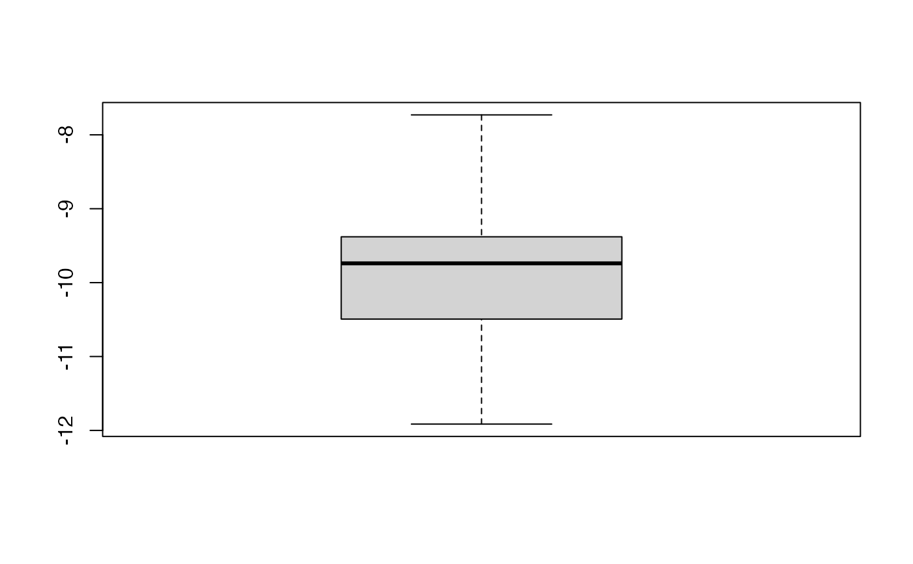
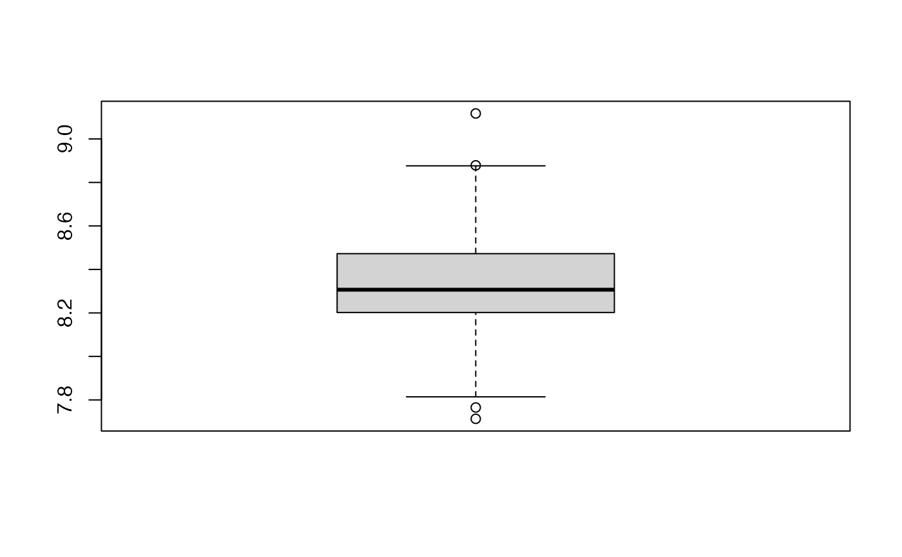

Extracts coefficients from k-fold cross validated partial least squares regression models
Source:R/kfolds2coeff.R
kfolds2coeff.RdThis fonction extracts coefficients from k-fold cross validated partial least squares regression models
Value
- coef.all
matrix with the values of the coefficients for each leave one out step or
NULLif another type of cross validation was used.
References
Nicolas Meyer, Myriam Maumy-Bertrand et Frédéric Bertrand (2010). Comparing the linear and the logistic PLS regression with qualitative predictors: application to allelotyping data. Journal de la Societe Francaise de Statistique, 151(2), pages 1-18. https://www.numdam.org/item/JSFS_2010__151_2_1_0/
See also
kfolds2Pressind, kfolds2Press,
kfolds2Mclassedind, kfolds2Mclassed and
summary to extract and transform
results from k-fold cross validation.
Author
Frédéric Bertrand
frederic.bertrand@lecnam.net
https://fbertran.github.io/homepage/
Examples
data(Cornell)
XCornell<-Cornell[,1:7]
yCornell<-Cornell[,8]
bbb <- PLS_lm_kfoldcv(dataY=yCornell,dataX=XCornell,nt=3,K=nrow(XCornell),keepcoeffs=TRUE,
verbose=FALSE)
kfolds2coeff(bbb)
#> [,1] [,2] [,3] [,4] [,5] [,6] [,7]
#> [1,] 90.87298 -7.730285 -5.317939 -13.05518 -7.612449 10.6111677 9.346481
#> [2,] 92.08375 -10.476510 -5.782367 -17.77961 -7.207449 -7.0528029 10.556420
#> [3,] 91.99726 -9.787064 -6.457435 -16.59124 -7.879221 -5.1780580 11.296555
#> [4,] 93.11223 -9.180395 -7.969940 -15.39982 -9.450540 -0.4784392 9.484642
#> [5,] 93.60436 -10.510020 -7.605163 -17.88485 -9.971635 -11.5650708 9.778748
#> [6,] 94.86937 -11.914366 -7.224898 -20.18752 -8.149944 -8.9696175 8.585089
#> [7,] 92.23105 -9.632494 -6.603052 -16.34906 -8.168203 -3.6682514 10.603008
#> [8,] 92.46569 -9.885233 -6.735075 -16.81921 -8.272827 -4.0839573 10.373591
#> [9,] 92.46387 -9.579230 -6.777947 -16.25454 -8.298890 -4.1484044 10.358129
#> [10,] 92.60529 -9.691082 -6.914517 -16.46361 -8.382754 -4.2807356 10.236205
#> [11,] 92.36316 -8.747489 -6.589638 -14.87073 -8.309297 -3.4465827 10.445493
#> [12,] 93.42592 -11.114193 -8.038234 -18.87582 -8.783616 -6.9236077 9.690647
#> [,8]
#> [1,] -29.60954
#> [2,] -33.45639
#> [3,] -31.02182
#> [4,] -34.89010
#> [5,] -34.37588
#> [6,] -53.16098
#> [7,] -33.39444
#> [8,] -34.49712
#> [9,] -33.70987
#> [10,] -34.34320
#> [11,] -34.82607
#> [12,] -31.84496
boxplot(kfolds2coeff(bbb)[,2])

rm(list=c("XCornell","yCornell","bbb"))
data(pine)
Xpine<-pine[,1:10]
ypine<-pine[,11]
bbb2 <- cv.plsR(object=ypine,dataX=Xpine,nt=4,K=nrow(Xpine),keepcoeffs=TRUE,verbose=FALSE)
kfolds2coeff(bbb2)
#> [,1] [,2] [,3] [,4] [,5] [,6]
#> [1,] 7.814246 -0.002869674 -0.03549716 0.02107684 -0.2219176 0.07293649
#> [2,] 8.361383 -0.002854043 -0.03743841 0.02249864 -0.2164871 0.06909414
#> [3,] 8.650702 -0.002814409 -0.03797563 0.02335471 -0.2733051 0.07768935
#> [4,] 8.558683 -0.002769261 -0.03941925 0.02261582 -0.2486856 0.07253035
#> [5,] 8.218008 -0.002808356 -0.03512320 0.02344851 -0.2380859 0.07483498
#> [6,] 8.305299 -0.002728968 -0.03775406 0.02226888 -0.2278873 0.07310943
#> [7,] 8.544910 -0.002866033 -0.04077690 0.02255038 -0.1986620 0.08297200
#> [8,] 8.071791 -0.002768139 -0.03735800 0.01911647 -0.1574095 0.06347242
#> [9,] 7.713087 -0.002301366 -0.03350332 0.02179469 -0.1982322 0.06886116
#> [10,] 8.193386 -0.002427074 -0.03899699 0.02178240 -0.2476962 0.07823805
#> [11,] 8.878504 -0.003085315 -0.03992126 0.01865159 -0.2000119 0.06161356
#> [12,] 9.117046 -0.003179412 -0.03520851 0.02509672 -0.2355585 0.07948714
#> [13,] 7.765163 -0.002551739 -0.03589722 0.02021236 -0.2297687 0.07507578
#> [14,] 8.298677 -0.002659646 -0.03597977 0.02186039 -0.2382632 0.06852447
#> [15,] 8.306726 -0.002731392 -0.03769351 0.02271611 -0.2067318 0.06867246
#> [16,] 8.700332 -0.003000855 -0.03968194 0.02031214 -0.2439055 0.07971910
#> [17,] 8.363382 -0.002725646 -0.03760331 0.02239444 -0.2284354 0.07265824
#> [18,] 8.297162 -0.002703300 -0.03809335 0.02228154 -0.2452161 0.07683082
#> [19,] 8.262983 -0.002749134 -0.03604436 0.02181592 -0.2560591 0.07712466
#> [20,] 8.876407 -0.003129747 -0.04096829 0.02442558 -0.2257238 0.07799168
#> [21,] 8.201937 -0.002817385 -0.04037497 0.01866908 -0.2256173 0.07206968
#> [22,] 8.284944 -0.002533698 -0.04058031 0.02165310 -0.2387052 0.07384772
#> [23,] 8.797446 -0.002860185 -0.03849982 0.02287225 -0.2398173 0.06896626
#> [24,] 7.929182 -0.002433262 -0.04104596 0.02373045 -0.2080378 0.07196279
#> [25,] 7.989959 -0.002757493 -0.04265244 0.02273451 -0.2204082 0.07554612
#> [26,] 8.387502 -0.002676524 -0.03883171 0.02166663 -0.2438722 0.07389119
#> [27,] 8.472460 -0.002825763 -0.03726580 0.02081686 -0.2401187 0.07506551
#> [28,] 7.911123 -0.002181740 -0.03810400 0.01767450 -0.1808041 0.04804859
#> [29,] 8.351547 -0.002759590 -0.03948543 0.02215742 -0.2302882 0.07157444
#> [30,] 8.433206 -0.002887146 -0.03839730 0.02024058 -0.2138490 0.06996299
#> [31,] 8.443818 -0.003194742 -0.03679137 0.02566206 -0.2401347 0.09821587
#> [32,] 8.304524 -0.003016708 -0.03992431 0.02217589 -0.1715886 0.06046621
#> [33,] 8.457649 -0.002769321 -0.03834922 0.02197341 -0.2326822 0.07359720
#> [,7] [,8] [,9] [,10] [,11]
#> [1,] 0.2447542 -0.2023747 -0.08867027 -0.6756387 -0.3860024
#> [2,] 0.2508868 -0.4458012 -0.08263970 -0.7356824 -0.3964378
#> [3,] 0.2606680 -0.4565363 -0.09217752 -0.7261476 -0.4746015
#> [4,] 0.2586394 -0.5379771 -0.08575226 -0.7061042 -0.4206479
#> [5,] 0.2133057 -0.3908510 -0.08249627 -0.7398298 -0.3869324
#> [6,] 0.2557966 -0.5581856 -0.08777483 -0.7309410 -0.3373923
#> [7,] 0.2140205 -0.5802810 -0.10056348 -0.7089801 -0.3989933
#> [8,] 0.2412951 -0.5263135 -0.09178826 -0.7010010 -0.2785220
#> [9,] 0.2802143 -0.5919984 -0.07268121 -0.8076147 -0.4227010
#> [10,] 0.2415159 -0.6658565 -0.08619423 -0.7333098 -0.3641896
#> [11,] 0.2358135 -0.5397474 -0.06518898 -0.6304151 -0.5049983
#> [12,] 0.2670978 -0.9590753 -0.08518518 -0.6965007 -0.2282369
#> [13,] 0.2021548 -0.4795504 -0.07983647 -0.6572603 -0.3362084
#> [14,] 0.2422333 -0.6637845 -0.07746177 -0.7198954 -0.2925045
#> [15,] 0.2466642 -0.5335098 -0.09370588 -0.6981061 -0.3848060
#> [16,] 0.2507118 -0.4494593 -0.09915981 -0.6924289 -0.4327700
#> [17,] 0.2490739 -0.5898428 -0.08451685 -0.7448365 -0.3305126
#> [18,] 0.2564153 -0.5118346 -0.08873345 -0.7275463 -0.3785027
#> [19,] 0.2611840 -0.4432492 -0.09082157 -0.7323138 -0.3756275
#> [20,] 0.2454048 -0.4253930 -0.09794089 -0.7144557 -0.4743556
#> [21,] 0.2600754 -0.3528332 -0.07860586 -0.6946200 -0.4181529
#> [22,] 0.2715177 -0.6308057 -0.09274944 -0.7124415 -0.3325791
#> [23,] 0.2610561 -0.6266037 -0.08359975 -0.6979821 -0.4452225
#> [24,] 0.2350859 -0.5378953 -0.09799516 -0.7206555 -0.2957781
#> [25,] 0.2374591 -0.3632903 -0.08893607 -0.7293388 -0.2622970
#> [26,] 0.2396266 -0.5755539 -0.08208888 -0.7096107 -0.3818814
#> [27,] 0.2637412 -0.4868311 -0.08269255 -0.7191352 -0.4532000
#> [28,] 0.2315868 -0.6747620 -0.08792043 -0.7548252 -0.2050949
#> [29,] 0.2622808 -0.5122030 -0.08093838 -0.7864637 -0.2986094
#> [30,] 0.2040295 -0.5588206 -0.10558610 -0.5334666 -0.3581429
#> [31,] 0.2718858 -0.3416514 -0.10653476 -0.8057978 -0.3245760
#> [32,] 0.1956558 -0.3607404 -0.06637462 -0.7149729 -0.3418038
#> [33,] 0.2524494 -0.5331250 -0.08739496 -0.7228717 -0.4052381
boxplot(kfolds2coeff(bbb2)[,1])

rm(list=c("Xpine","ypine","bbb2"))